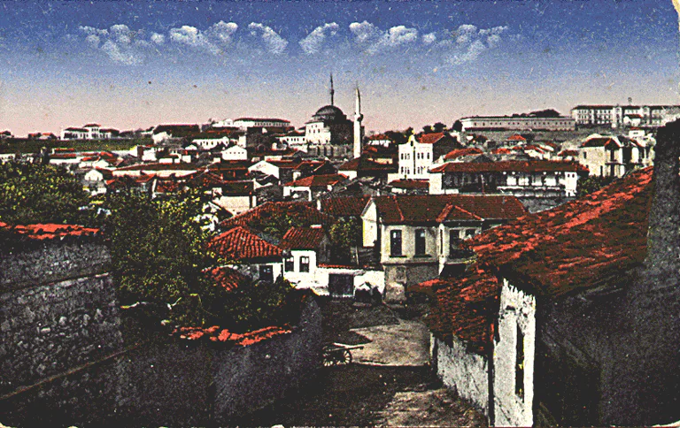
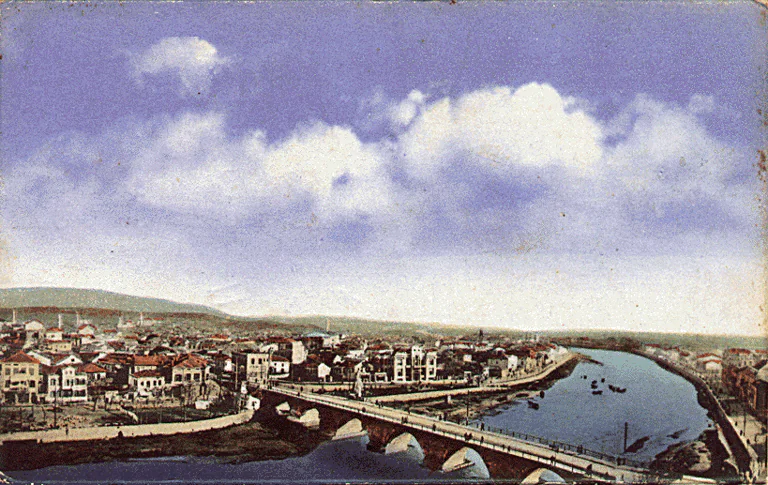

Скопје 1916 - 1917 панорама 2
Документи од Балканските воијни
- Година
- 1916-1917
- Должина
- 00:12

Скопје кон крајот на 19 век. Поглед на неизградените простори на ново маало на десниот брег на р.Вардар. Во позадина се гледа градската тврдина - Кале. Во десниот дел е ридот Гази Баба.

Крај на 19 век. Неизградените простори од десната страна на реката Вардар. Само мал број на куќи покрај самата река Вардар. Во позадината се извишува скопската тврдина - Кале.

Скопје 1888 година, фотографирано од ридот Гази Баба кон скопската тврдина - Кале.

Поглед на градот од Саат кулата, кон северниот дел на Скопје со старите турски и македонски маала. Во заден план е ридот Гази Баба. (крај на 19 век)

Скопје - поглед на стариот дел со старата чаршија. Во позадината се гледа Мустафа пашина џамија, а десно од неа е скопската тврдина - Кале со касарните. Во преден план се гледаат стамбени објекти во маалото Гази Баба - крај на 19 век.

Скопје, почеток на 20 век. Поглед од саат кулата на стариот јавен, трговски и занаетчиски центар, со просторот на чаршијата. Нови архитектонски облици во старата урбана структура. Во задниот план доминира Мустафа пашина џамија и градската тврдина со касарните. Под неа е Паша Јигит бегова џамија, најстарата џамија во Скопје (денес не постои).

Поглед од скопската тврдина - Кале према планината Водно. Веднаш под Калето е Еврејското маало. Се гледа р.Вардар и Камениот мост. Веднаш до него е Бурмали џамија
- почеток на 20 век.

Поглед од скопската тврдина - Кале према планината Водно. Веднаш под Калето е Еврејското маало. Се гледа р.Вардар и Камениот мост. Веднаш до него е Бурмали џамија
- почеток на 20 век.

Поглед на Еврејското маало и градот, од скопската тврдина - Кале. Во преден план е Синагогата (без покрив). Десно е Камениот мост - почеток на 20 век.

Поглед од скопската тврдина - Кале кон Камениот мост и Бурмали џамија. На оваа фотографија е интересно да се забележи колку малку бил градот распространет на десната страна од р.Вардар. Фотографијата е направена кон крајот на 19 век. Далеку во позадината се гледа фабриката за пиво или како ја нарекувале тогаш "Бираријата". Во преден план е дел од Еврејското маало.

Панорамски приказ од крајот на 19 век на централното градско подрачје. Во средината е турскиот театар. На десната страна на Р.Вардар, веднаш до Камениот мост се гледа Бурмали џамија.

Фотографијата е направена од ѕидините на скопската тврдина - Кале, пред Првата светска војна. Во подножјето се стамбени објекти од Еврејското маало, училиштето и Синагогата. Лево е црквата Св. Димитрија.

Панорамска снимка, направена од скопската тврдина - Кале во почетокот на 20 век. Во предниот дел се неколку војници од кругот на касарната. Во подножјето се гледаат куќи од еврејското маало и Пајко маало, потоа Камениот мост, а веднаш до него Бурмали џамија. Понатаму продолжува новиот дел од Скопје, а во далечина се назира фабриката за пиво.

Поглед од скопската тврдина - Кале кон планините Водно и Китка. Во средниот план од фотографијата се гледа Камениот мост, а веднаш до него Бурмали џамија.

Скопје за време на Првата светска војна. На фотографијата се гледа логор на српската војска, лоциран во близината на црквата Св. Спас, чија камбанарија се гледа во позадината.

Панорама на Скопје - 20-тите години. Во подножјето е еврејското маало со училиштето и Синагогата. Се гледа изградбата на Народниот театар.

Панорамска слика на Скопје (околу 1920). На оваа фотографија е интересно де се види планината Водно. Всушност нејзината "голотија", за разлика од денес која изобилува со прекрасни шуми. Пошумувањето е вршено по завршувањето на Втората светска војна, со организирани младински акции. Во преден план е Еврејското маало со Синагогата и Еврејското училиште.

Поглед на градот Скопје од скопската тврдина - Кале. Во преден план е Еврејското маало со Синагогата, училиштето и Народниот театар. Во левиот дел од фотографијата се гледа Камениот мост и Офицерскиот дом во изградба - 20-тите години.

Скопје, 20-тите години. Поглед од скопската тврдина - Кале на Еврејското маало.

Панорамска фотографија на Скопје од Гази Баба кон скопската тврдина - Кале. (почеток на 20 век)

Мустафа пашина џамија, во позадина, а под неа делумно се гледа Паша Јигит бегова џамија, која била најстара џамија во Скопје. (денес не постои)

Поглед на Скопје од Гази Баба. Во преден план е ситна стамбена структура на стамбените маала. Во заден план е Мустафа пашина џамија и воените касарни во јужниот и северниот дел од градската тврдина - Кале.

Поглед на стариот дел на градот на левата страна од р.Вардар. Во преден план се приватни стамбени објекти. Во средината е комплексот на старата скопска чаршија. Во задниот дел доминира Мустафа пашина џамија, а во нејзината позадина е градскиот затвор и касарнските објекти, кои се наоѓале на Калето. Под Мустафа пашина џамија е Паша Јигит бегова џамија, најстарата џамија во Скопје (денес не постои). (20-тите години)

Панорама на старата урбана структура на градот изменета со процесот на европезација и изградба на објекти со класични еклектични и други стилски обележја. Фотографијата е направена од Саат кулата кон Мустафа пашина џамија. Десно се гледа скопската тврдина - Кале со касарните - 20-тите години.

Чаир - стар дел на градот (денешна општина Чаир). Во преден план е Гази Иса бегова Џамија, а во позадина Јаја паша џамија. - околу 1920 година

Панорама на Скопје - левата страна со населбата Чаир и дел од Гази Баба. Во преден план е Гази Иса беговата џамија, а во позадината на Јаја пашина џамија. (20-тите години)

Саат кула - изградена 1566-72 год. Во позадината е Гази Иса бегова џамија и Јаја пашина џамија - 20-тите години.

Панорама на стариот дел на градот, кон Гази Баба. Поглед од скопската тврдина - Кале. Најдесно е Султан Муратова џамија, а лево од неа Саат кулата. Во иста линија лево се гледа Гази Иса бегова џамија - 20-тите години.

Панорамски приказ на централното градско подрачје.- 20-тите години.

Зимски пејсаж на централното подрачје на градот. Во предниот план се хаотично изградени објекти, на чија локација покасно се изградила Народната банка. Терасата, на дел од објектот што се гледа, е летно кино. Двата столба на крајот се држачите на платното, а на празниот дел биле редени столици за гледачите. Лево горе се гледа скопската тврдина - Кале. (20-тите години)

Авионска снимка на централниот дел од градот (околу 1928 год.) Доминира Офицерскииот дом, Камениот мост, Народниот театар и Еврејското маало. Нагоре по течението на р.Вардар се гледа дрвениот мост кој води до Народниот театар. Во горниот десен дел се гледа дел од Калето. Во преден план е дел од населбата ново маало. Фотографијата е направена во лето, бидејќи реката е многу повлечена.

Авионска снимка на централниот дел од градот (околу 1928 год.) Доминира Офицерскииот дом, Камениот мост, Народниот театар и Еврејското маало. Нагоре по течението на р.Вардар се гледа дрвениот мост кој води до Народниот театар. Во горниот десен дел се гледа дел од Калето. Во преден план е дел од населбата ново маало. Фотографијата е направена во лето, бидејќи реката е многу повлечена.

Панорамска-авионска фотографија на Скопје. Опфатена е повеќе десната страна на р.Вардар, на која доминира Офицерскиот дом. Десно е Ристиќева палата. Пред него е плоштадот на кој централно се гледа уредено зеленило. Исто така се забележуваат пајтони, на кои, плоштадот им била главно пајтон стојалиште за превоз на граѓански лица. Двата брега ги поврзува Камениот мост. Долу десно се гледа Народниот театар. Прекрасна градба по која тагуваат многу стари Скопјани.

Панорамска снимка на левиот дел на градот со Камениот мост и маалата: лево - Еврејското маало. десно - Пајко маало. Десно од мостот е споменикот на паднатите борци во Балканските војни, кој се наоѓал пред Отоманската банка. Во позадините се гледаат делови од џамии и саат кулата, како и населбата Чаир и Гази Баба. (20-тите години)

Панорамска слика на Скопје, односно на левиот кеј од р.Вардар со дел од Еврејското маало, Пајко маало и Камениот мост. (20-тите години)

Поглед на Камениот мост од кулата на Офицерскиот дом. Веднаш до мостот од десна страна, се наоѓала ординацијата на забарот Д-р Рубен. Малку подесно е објектот на Отоманската банка. Помеѓу нив било мало плоштадче на кое имало стојалиште за пајтони. А во средината на плоштадчето бил споменикот на паднатите борци - околу 1927 година.

Поглед на Камениот мост од кулата на Офицерскиот дом. Веднаш до мостот од десна страна, се наоѓала ординацијата на забарот Д-р Рубен, како и земјоделската банка. Десно е објектот на Отоманската банка. Помеѓу нив било мало плоштадче на кое имало стојалиште за пајтони. А во средината на плоштадчето бил споменикот на паднатите борци во Балканските војни - околу 1927 година.

Поглед на Камениот мост од кулата на Офицерскиот дом. Веднаш до мостот од десна страна, се наоѓала ординацијата на забарот Д-р Рубен. Малку подесно е објектот на Отоманската банка. Помеѓу нив било мало плоштадче на кое имало стојалиште за пајтони. А во средината на плоштадчето бил споменикот на паднатите борци - околу 1927 година.

Поглед кон Камениот мост на р.Вардар и дел од левиот брег на р.Вардар или кон Пајко маало, фотографирано од кулата на Офицерскиот дом. Веднаш до мостот од десна страна, се наоѓала ординацијата на забарот Д-р Рубенс. Десно е објектот на Отоманската банка. Помеѓу нив било мало плоштадче на кое имало стојалиште за пајтони. А во средината на плоштадчето бил споменикот на паднатите борци во Балканските војни - околу 1927 година.

Панорамска снимка - поглед на Камениот мост, со скопската тврдина - Кале во позадината и Еврејското маало - 20-тите години.
.

Скопје по 1930 год. Лево е Народната банка, а десно Офицерскиот дом. Во преден план е дел од минарето на Ибни Пајко џамија и објектот на дентистот Д-р Рубен. На малиот плоштад имало фурна со највкусната симит погача во Скопје и пајтон стојалиште за превоз на граѓански лица.

Поглед на р.Вардар со скопската тврдина - Кале, а на десната страна се назира градот. Видливи се Офицерскиот дом и Народната банка. - 30-тите години

Прекрасна фотографија на градот и течението на р.Вардар. Лево е скопската тврдина - Кале. Централно се гледаат објектите на Офицерски дом и Народната банка. Десно е планината Водно, а во далечина се обрисите на планината Китка. - 30-тите години

Прекрасна глетка на течението на р.Вардар со планината Водно и населбата Буњаковец. Видливи се Офицерскиот дом и Народната банка. (30-тите години)

Поглед на населбата Буњаковец - 30-тите години, со дел од градскиот парк, во десниот дел на фотографијата.

Дел од новоизградената населба Буњаковец во 20-тите години. Се гледаат двоспратни објекти со скромен архитектонски третман.

Поглед на населебата Буњаковец, 30-тите години.

Изглед на населбата Буњаковец, која денес се наоѓа во централното градско подрачје. Се гледаат низ од стамбени објекти со планска изградба, по урбанистичкото решение за населбата Буњаковец.

Прекрасен панорамски зимски пејсаж. Фотографијата е направена од скопската тврдина - Кале кон планината Водно. Во десниот среден дел се гледаат објектите: Офицерски дом и стопанска трговска комора.

Поглед на Камениот мост на р.Вардар. Од другата страна на реката е: лево - Народната банка, десно - Офицерскиот дом.

Панорама на Скопје - фотографирана од скопската тврдина - Кале. Доминираат два објекта: десно - Офицерскиот дом, а лево - Народната банка. Во преден план е Еврејското маало. (30-тите години)

Авионска снимка на централниот дел на градот. Опфатен е плоштадот со Офицерскиот дом и Народната банка. Погоре се гледа Народниот театар и дрвеното мовче.

Авионска снимка на градот. Опфатен е плоштадот со Офицерскиот дом, Народната банка, стопанската комора, маалата: Еврејското и Пајко маало, и Камениот мост. Лево горе се гледа целата градска тврдина - Кале со касарната. До неа се наоѓа Мустафа пашина џамија, а во позадината се назира Јаја паша џамија.

Авионска фотографија на катедралната црква Св. Богородица во Скопје подигната 1835 година (во центарот, со високо подигната камбанарија), и црквата Св. Мина од 1902 година, (лево со две камбанарии). Околината е Пајко маало.

Скопје, 30-тите години. Стар дел на градот. Поглед преку прозор со железни решетки од стар турски објект.

Панорама на градот. Најлево е Султан Муратова џамија, а десно од неа е Саат кулата. Најдесно е Гази Иса беговата џамија. Во позадина се гледа Народната банка и Офицерскиот дом. Во позадина се издигнува планината Водно. (30-тите години)

Панорама на градот. Во заден план е Султан Муратова џамија, а десно од неа е Саат кулата. Најдесно е Гази Иса беговата џамија. Во позадина се гледа Народната банка и Офицерскиот дом. (30-тите години)

Авионска снимка на градот. На долниот дел се гледа Камениот мост и Офицерскиот дом. Погоре по течението е дрвеното мовче кое води до Народниот театар и Еврејското маало. Во горниот дел е скопската тврдина - Кале со касарната. Снимена е на 26 Јуни 1933 г. во 10 часот наутро.

Празен неизграден простор пред денешниот Музеј на град Скопје. Лево се гледаат хотелите "Бристол" и "Српски крал" кои се наоѓаат на главната улица која води до плоштадот. На истата улица се гледа, централно на фотографијата, Крангова палата. (30-тите години)

Авионска снимка на плоштадот. Во преден план е Народната банка од задната страна, а десно од неа е стопанската трговска комора. Спроти Народната банка се наоѓа Офицерскиот дом. Десно се гледа р.Вардар и дел од Камениот мост. По горното течение се гледа дрвениот мост кои водел до Народниот театарот, кој исто така се гледа во горниот десен агол на фотографијата.

Документи од Балканските воијни
 Аквадукт4 разгледници
Аквадукт4 разгледници Кале30 разгледници
Кале30 разгледници Мостови60 разгледници
Мостови60 разгледници Кеј58 разгледници
Кеј58 разгледници Плоштад46 разгледници
Плоштад46 разгледници Објекти66 разгледници
Објекти66 разгледници Христијански храмови19 разгледници
Христијански храмови19 разгледници Муслимански објекти33 разгледници
Муслимански објекти33 разгледници Офицерски дом29 разгледници
Офицерски дом29 разгледници Театар28 разгледници
Театар28 разгледници Железничка станица13 разгледници
Железничка станица13 разгледници Училишта36 разгледници
Училишта36 разгледници Паркови12 разгледници
Паркови12 разгледници Пазари18 разгледници
Пазари18 разгледници Улици38 разгледници
Улици38 разгледници Панорама I60 разгледници
Панорама I60 разгледници Панорама II30 разгледници
Панорама II30 разгледници Колажи55 разгледници
Колажи55 разгледници Поплави9 разгледници
Поплави9 разгледници Земјотрес27 разгледници
Земјотрес27 разгледници Скопје 200026 разгледници
Скопје 200026 разгледници